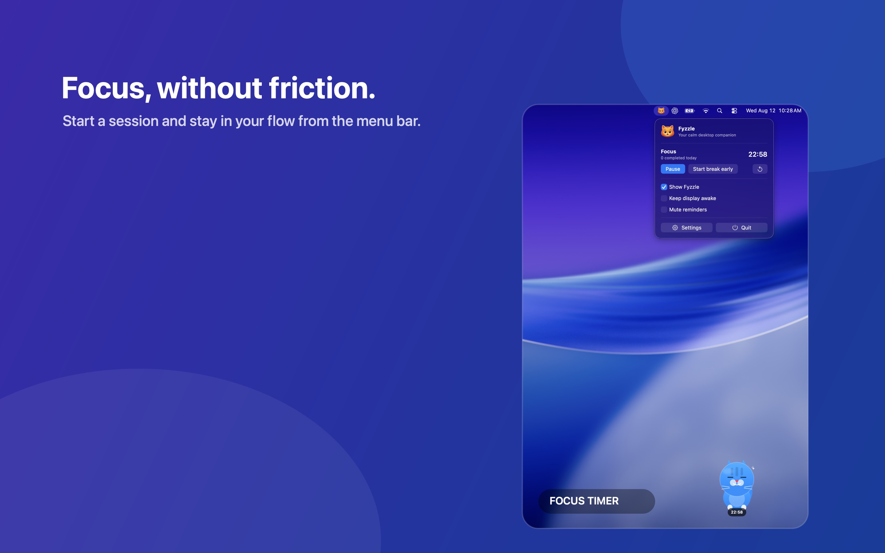
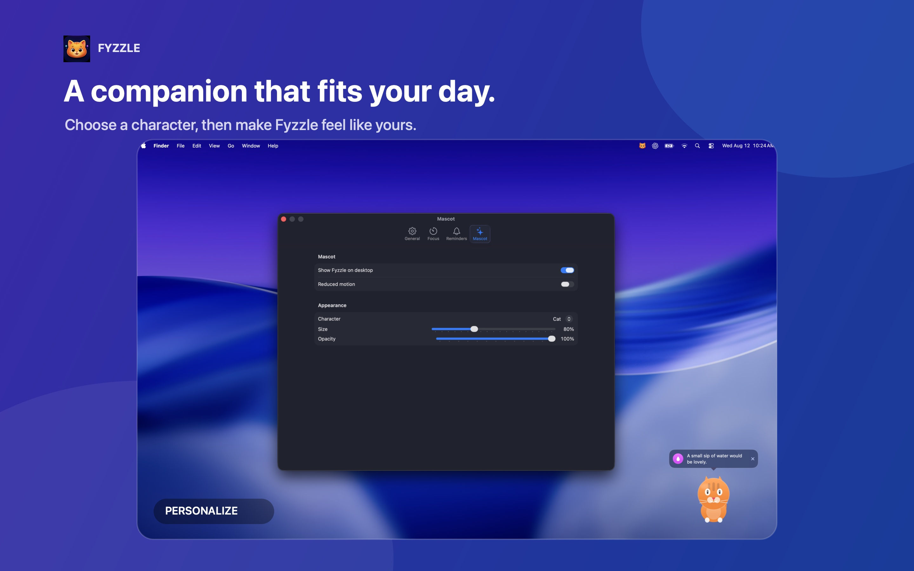

Stay in flow
Use a Pomodoro-style focus timer right from the menu bar, with work and break sessions that fit your rhythm.
YOUR CALM DESKTOP COMPANION
Fyzzle brings focus sessions, gentle wellbeing reminders, and a little personality to your Mac—without getting in the way.
Get Fyzzle on the Mac App StoreOne purchase. Yours to keep.
SMALL HABITS, GENTLY HELD
Fyzzle is designed for the long days at your Mac: practical tools when you need them, a friendly nudge when you forget them.
Use a Pomodoro-style focus timer right from the menu bar, with work and break sessions that fit your rhythm.
Set gentle reminders for water, eye rest, posture, stretching, and movement—then adjust every interval.
Choose Cat, Blob, or Robot, tune the size and motion, then let your desktop buddy quietly come alive.
FOCUS, WITHOUT FRICTION
Start or pause focus sessions, manage reminders, and open settings from a compact menu-bar control.


YOUR SPACE, YOUR WAY
Choose your character and tailor Fyzzle’s appearance, motion, and gentle reminders to suit the way you work.
A KINDER WAY TO KEEP GOING